Robotic Boomerang Throwing
via Model-Based Release Design
1 Learning Algorithms and Systems Lab (LASA), EPFL
2 Automatic Control Lab, EPFL
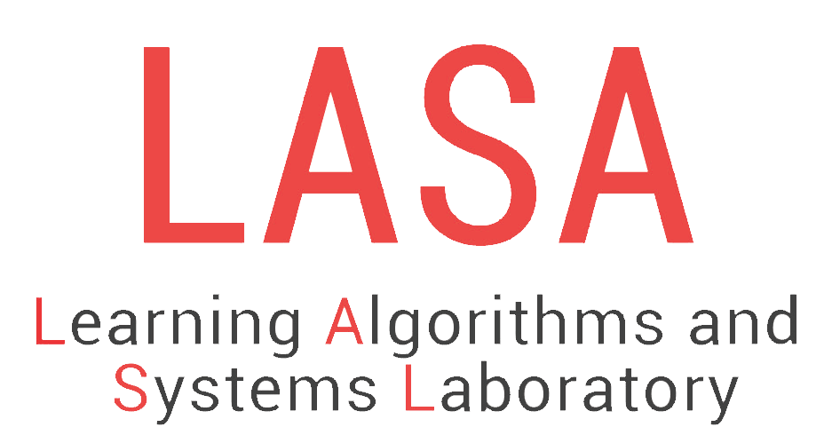
Model-Based Release Design
Robot launch design
Transient release dynamics: >1,700°/s spin increase in ~100 ms
Predict release spin
Adjust grasp angle θg and throw motion q(t)
Boomerang geometry design
Flight dynamics at low Reynolds numbers
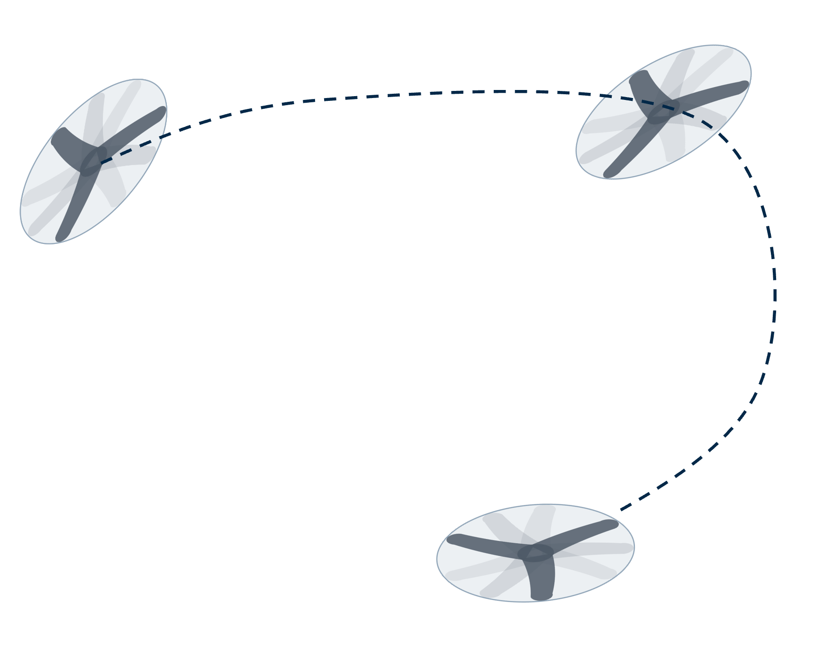
Predict flight changes under design changes
Adjust size and thickness
Iterative design process for a returning throw
Nominal · ~90° grasp · 45 rad/s
Need more spin to precess → Increase grasp angle
View measured trajectories
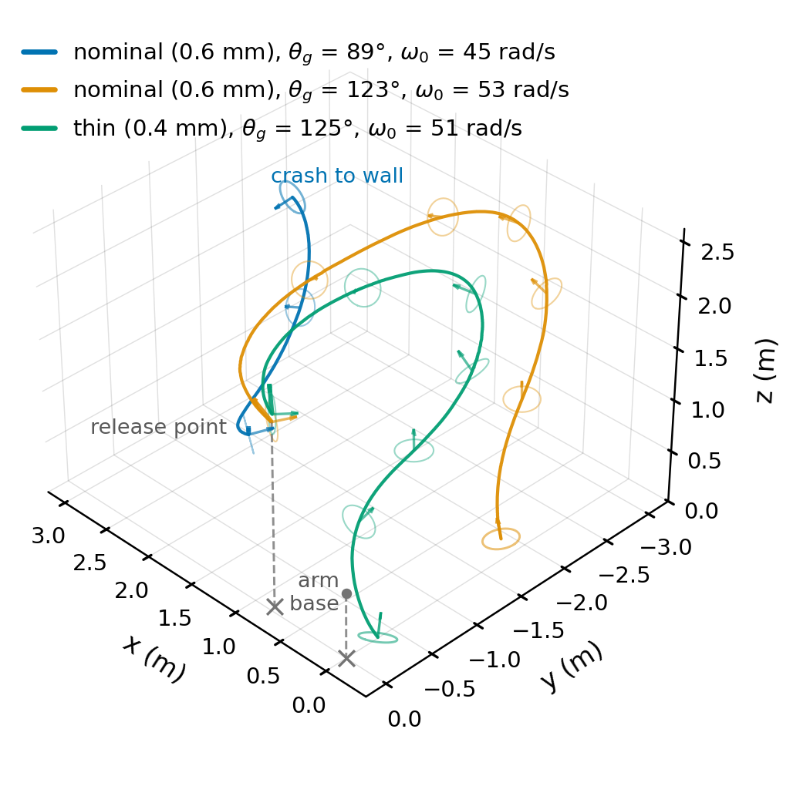
Boomerang flight precession intuition
Fast spin generates lift → Spin lift serves as centripetal force
Challenge: Dynamic mismatch with humans
Redesign boomerangs for robots
Spin-averaged flight dynamics
Rapid spin lets us average wing loads over one revolution [2]
Spin is much faster than precession and inclination change
Average the wing loads over one revolution
V: center-of-mass velocity
α: disk angle of attack
U = V/(ωR): advance ratio
U: flow asymmetry between advancing and retreating blades
α: disk orientation relative to incoming air flow
Staged identification
Spin dynamics isolate the spin-axis torque
- Fit the spin-axis torque dependence
- Retain it while fitting all six coefficient functions
Predicting flight changes across boomerang designs
Keep the aerodynamic coefficient functions fixed
Update mass, radius and inertia
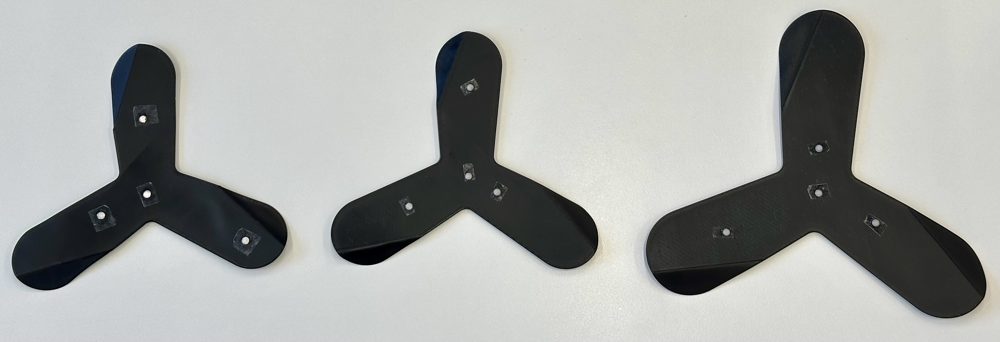
Nominal · Thin · Large
0.6 mm · 0.4 mm · 0.6 mm
85 mm · 85 mm · 106.25 mm radius
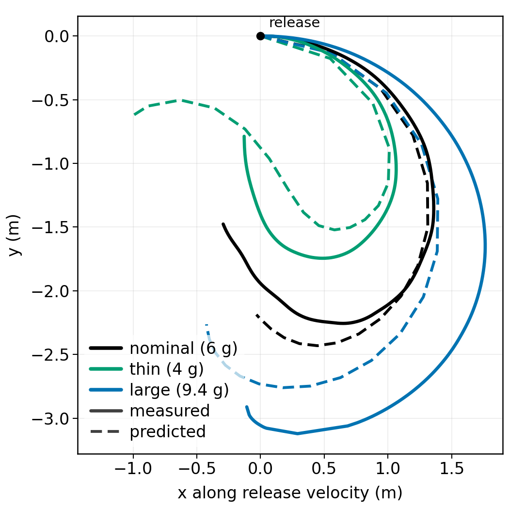
Solid: measured · Dashed: predicted · No refitting
Transient release dynamics
Fast in-hand spinning during a ~100 ms release
The Sliding Pivot model [3] predicts the release state
Robot release 1/4×
Release model
Model screening & robot validation
Screen motion parameters in simulation → Test the predicted spin response on the robot
Vary the throw parameter
Seek a large, monotonic spin change
Repeat across operating conditions
Seek consistent local changes
Spin authority: how much a parameter changes release spin
Consistency: a similar response across levels and conditions
Predicted release spin
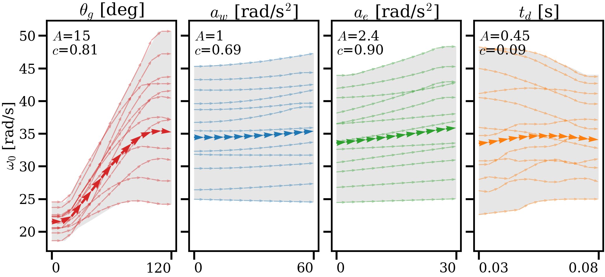
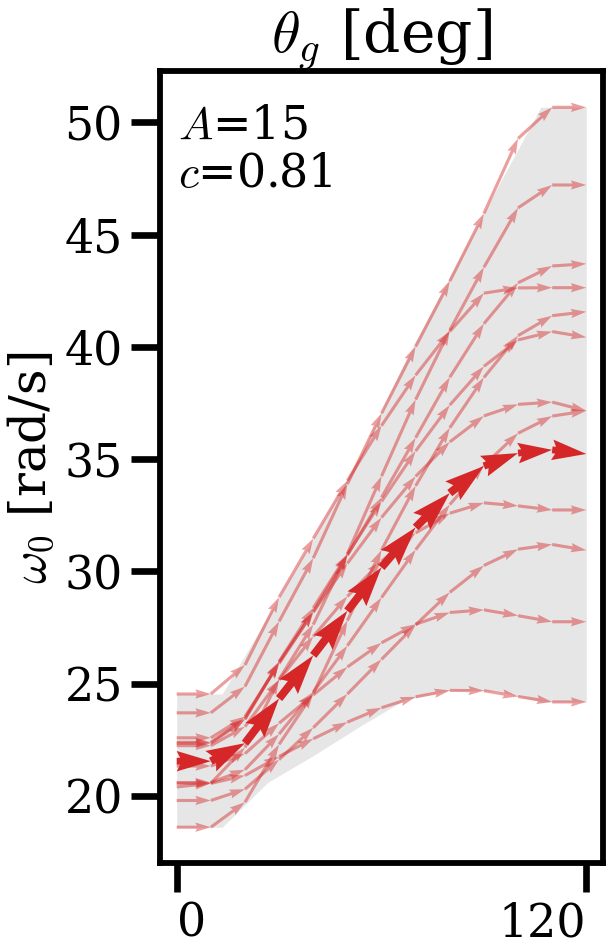
Wrist deceleration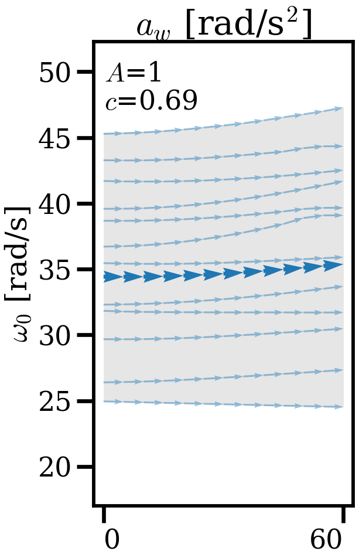
Elbow deceleration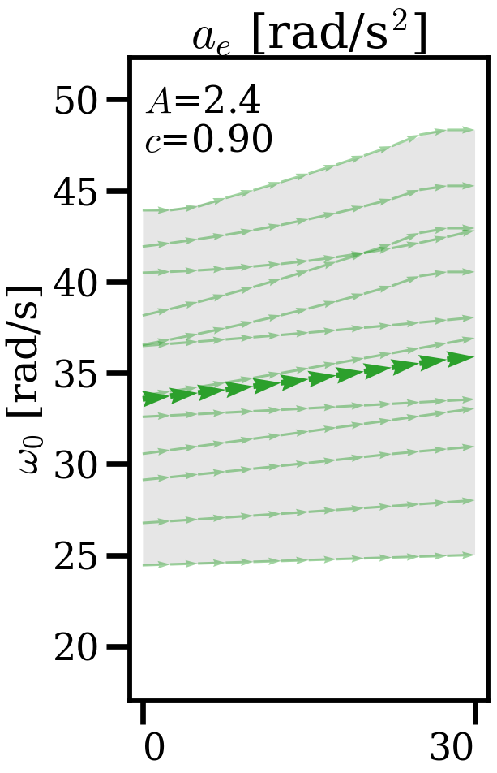
Gripper delay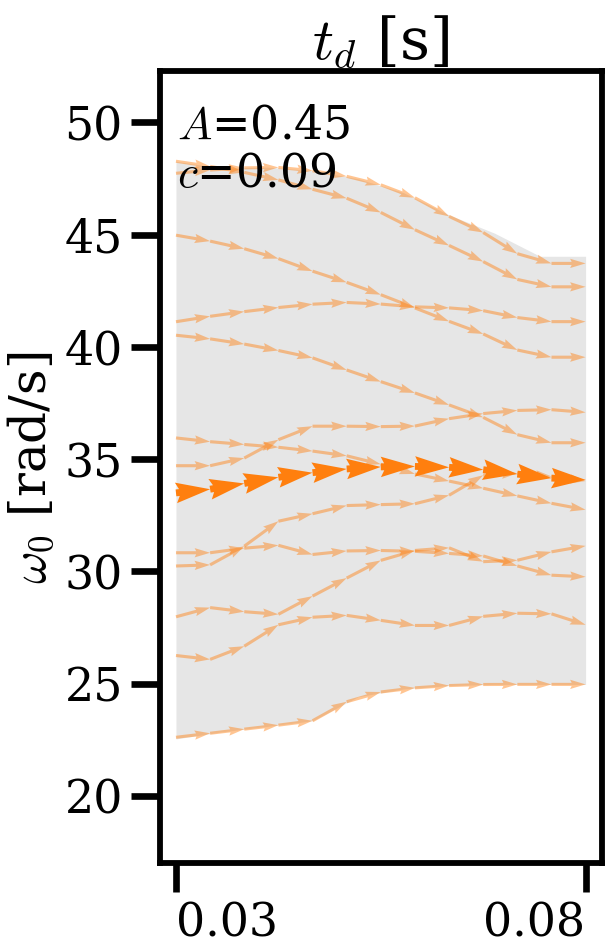
Gripper delay gives the least consistent spin response
Measured release spin: nominal and thin boomerangs
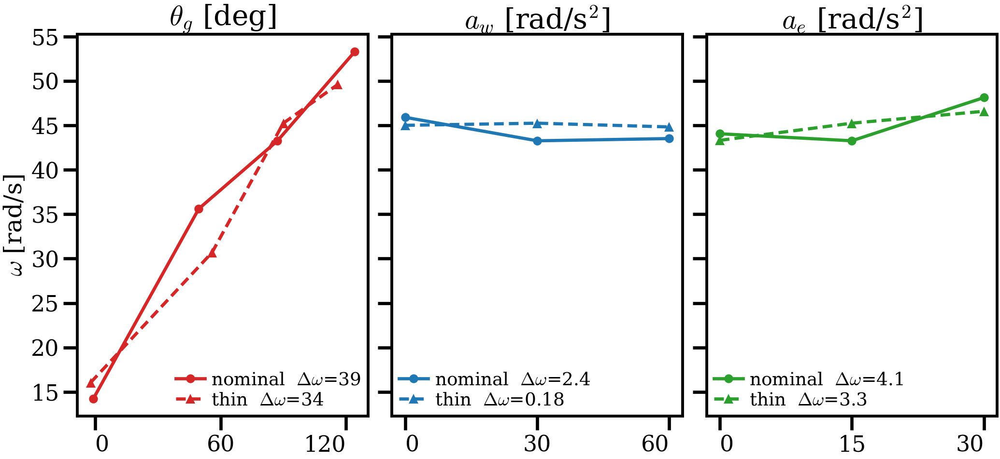
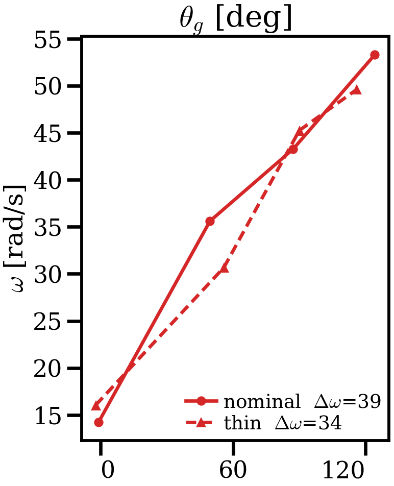
Wrist deceleration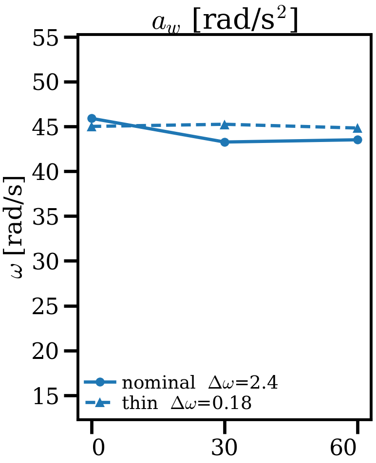
Elbow deceleration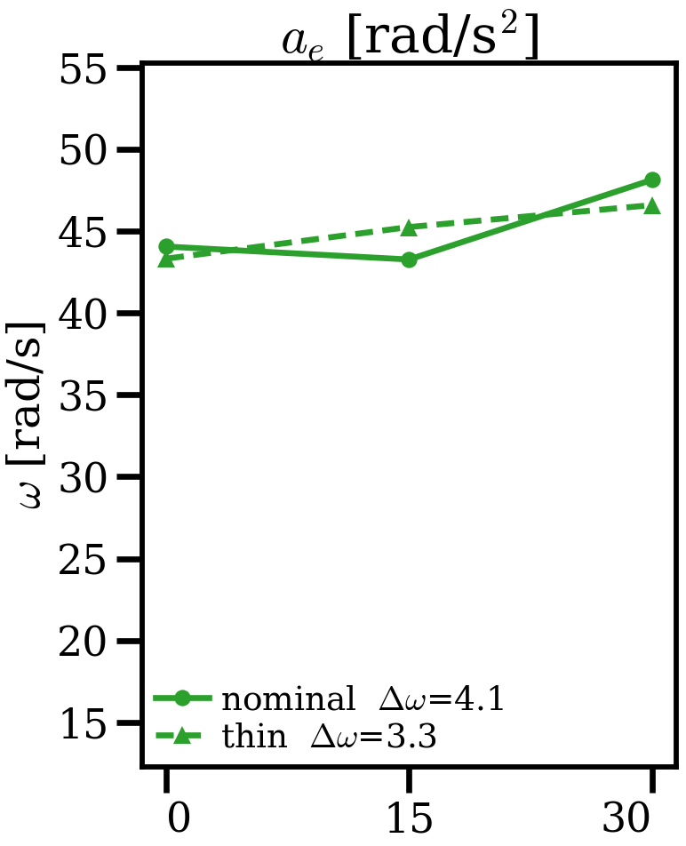
Robot tests confirm the spin authority ranking
Grasp angle ≫ elbow deceleration > wrist deceleration
Grasp angle ≫ elbow deceleration > wrist deceleration